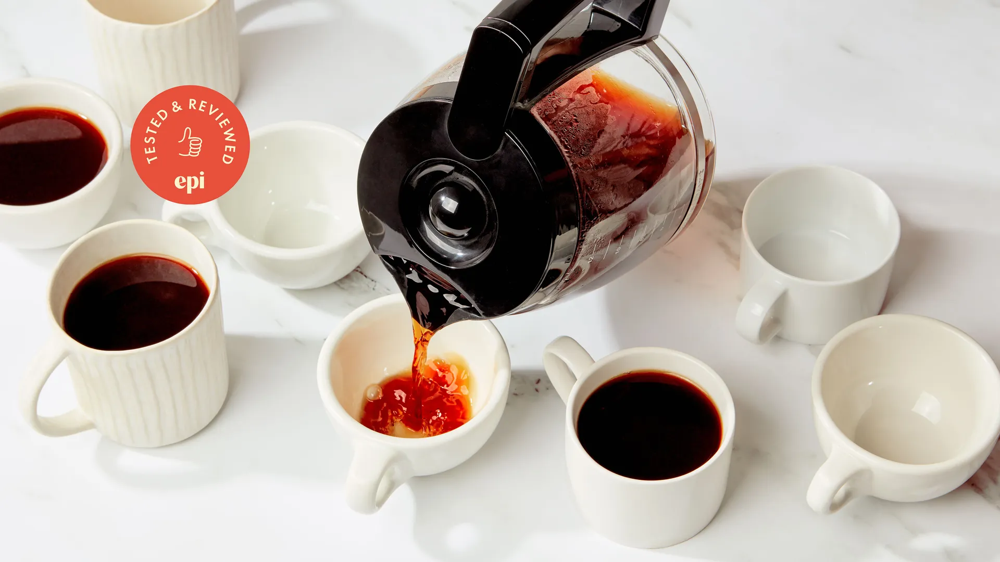
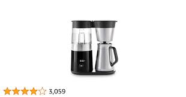
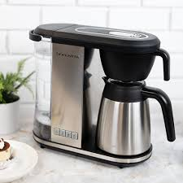
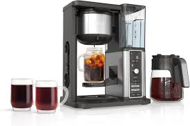
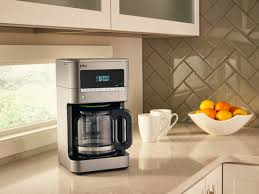

To find the best drip coffee makers, we tested 19 leading models from the likes of Technivorm, Oxo, Bonavita, Ninja, and more.
After rigorous testing, here are our top picks:
Technivorm Moccamaster
The Technivorm Moccamaster consistently delivers hot, flavorful coffee. Its durable build and precise temperature control make it a favorite among coffee enthusiasts.
Oxo Brew 9 Cup Coffee Maker
The Oxo Brew offers a user-friendly interface and brews coffee at the optimal temperature. Its sleek design fits well in modern kitchens.
Bonavita Connoisseur 8-Cup One-Touch
This Bonavita model is known for its simplicity and efficiency, brewing a full pot in about six minutes. Its pre-infusion mode ensures even saturation of coffee grounds.
Ninja Hot and Cold Brewed System
The Ninja system stands out for its versatility, capable of brewing both hot and cold coffee, as well as tea. Its built-in frother is a bonus for latte lovers.
Braun BrewSense Drip Coffee Maker
The Braun BrewSense offers excellent performance at a budget-friendly price. Its compact design and programmable features make it a great choice for small spaces.